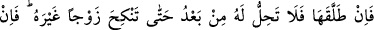
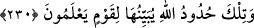

istemeleri, din kardeşliğinin tesis ettiği yakınlığı koparmaları ve yüce himmetlerini
onlara bağışladıktan sonra kalblerini onlardan çekip almaları muvafık düşmez. Çünkü
hîbe ettiği şeyi geri alan kimse, kustuğunu tekrar yiyen gibidir. Yalnız dostluk ve
arkadaşlık hukûkuna riâyet husûsunda Allah’ın sınırlarını koruyamamaktan korkmaları
hali müstesnâ. Eğer bazı dînî vecîbeleri yerine getirmede ihmalkârlığa, yağcılık ve
münâfıklığa sebeb olması bakımından, bu husûstaki Allah’ın hudûdunu korumaktan
korkarsanız, hukuka riâyet için bazı hazları fedâ etmekte bir beis yoktur. İşte bunlar,
Allah’ın hak ve vazîfelerden müteşekkil sınırlarıdır. Hak elde etmek düşüncesiyle
vazifelere riâyeti terkederek sınırları aşmaya kalkışmayın. Bu işârî izahlar, et-
Te’vîlâtü’n-Necmiyye adlı eserden alınmıştır.
230. Eğer erkek kadını (üçüncü defa) boşarsa, ondan sonra kadın bir başka
erkekle evlenmedikçe onu alması kendisine helâl olmaz. Eğer bu kişi de onu
boşarsa, (her iki taraf da) Allah’ın sınırlarını muhâfaza edeceklerine inandıkları
takdirde, yeniden evlenmelerinde beis yoktur. Bunlar Allah’ın sınırlarıdır. Allah
bunları bilmek, öğrenmek isteyenler için açıklar.
Erkek, hanımını iki talâkla boşadıktan sonra, üçüncü bir kez daha boşarsa, artık bu
üçüncü talâktan sonra ne ric’at yoluyla, ne de yeni bir akid vâsıtasıyla ona dönemez.
Fakat bu kadın, kendisini boşayan erkeğin dışında başka bir erkekle evlenir, vardığı
ikinci koca da onu boşarsa ancak bu takdirde eski karı-kocanın tekrar evlenme hakları
doğar. Fakat evlenebilmeleri için Allah Teâlâ’nın koyduğu evlilikle ilgili hükümle
hareket etme niyet ve düşüncesinde olmaları gerekir. Âyette “şâyed zannederlerse”
denilip “şayet bilirlerse” denmemiştir. Bunun sebebi şudur: Çünkü insan yarın ne
olacağını bilmez, ancak zanneder. İşte bunlar, Allah’ın değişme ve tenâkuzdan uzak belli
başlı hükümleri olup bunları anlayıp bilen kimselere açıklamaktadır. Dâvet ve tebliğ
herkese şâmil olduğu halde, bu hükümlerin sadece bilen kimselere açıklanmış olması
dikkat çekicidir. Zira ancak bilen kimseler, bunlardan tam anlamıyla istifade ederler.
Câhiller ise ne bu hükümlere kulak asarlar, ne de inceliklerine dikkat ederler.
Âyette, boşanmış kadının evleneceği; fakat henüz evlenmemiş olduğu ikinci şahsa;
zevc (koca) denmiştir. Çünkü hemencecik yapılacak bir akidle zevc olması mümkündür.
Daha sonra alacağı vasıfla önceden isimlendirilmiştir.
Âyette zikredilen “nikah”dan maksad cimâ değil, sadece akiddir. Saîd b. Müseyyeb
de bu mânâyı tercih etmiştir. Âyette kullanılan ifâde de bu mânâya şâhidlik etmektedir.